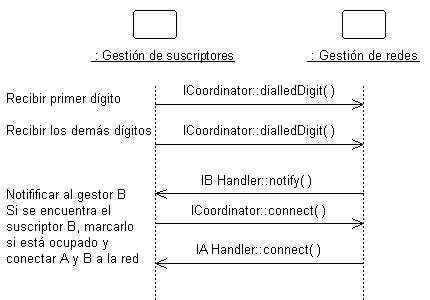
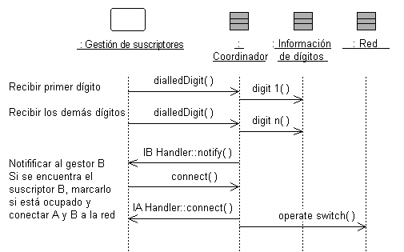

|
Objetivo
|
Especificar el comportamiento interno del subsistema.
Identificar nuevas clases de diseño o nuevos subsistemas de diseño que se necesitan para
satisfacer los requisitos de comportamiento del subsistema.
|
El comportamiento externo de un subsistema viene definido principalmente por las interfaces que realiza. Cuando un
subsistema realiza una interfaz, realiza un compromiso para dar soporte a todas y cada una de las operaciones definidas
por la interfaz. Por su parte, la operación la puede realizar otra operación en un elemento de diseño (es decir, una Clase de diseño o un Subsistema de diseño) que contiene el subsistema; esta operación
puede requerir la colaboración con otros elementos de diseño.
Las colaboraciones de elementos de modelo dentro del subsistema se deben documentar utilizando diagramas de secuencia
que muestran cómo se realiza el comportamiento del subsistema. Cada operación en una interfaz realizada por el
subsistema debe tener uno o varios diagramas de secuencia que la documenten. Este diagrama es propiedad del subsistema
y se utiliza para diseñar el comportamiento interno del subsistema.
Si el comportamiento del subsistema depende mucho del estado y representa una o más hebras de control, las máquinas de
estado son normalmente más útiles para describir el comportamiento del subsistema. Las máquinas de estado en este
contexto se utilizan conjuntamente con clases activas para representar una descomposición de las hebras de control del
sistema (o el subsistema, en este caso), y se describen en diagramas de gráfico de estados. Consulte Directriz: Diagrama de gráfico de estados. En sistemas en
tiempo real, el comportamiento de Producto de
trabajo: Cápsulas también se describe utilizando máquinas de estado. Dentro del
subsistema, pueden existir hebras de ejecución independientes, representadas por clases activas.
En sistemas en tiempo real, se utilizarán Producto de
trabajo: Cápsulas para encapsular estas hebras.
Ejemplo:
La colaboración de subsistemas para ejecutar un comportamiento necesario del sistema se puede expresar utilizando
diagramas de secuencia:

Este diagrama muestra cómo se utilizan las interfaces de los subsistemas para ejecutar un caso de ejemplo. En concreto,
para el subsistema Gestión de redes, se muestran las interfaces específicas (ICoordinator en este caso) y las
operaciones a las que debe dar soporte el subsistema. También se puede ver que el subsistema NetworkHandling depende de
las interfaces IBHandler y IAHandler.
Si miramos dentro del subsistema, vemos cómo se realiza la interfaz ICoordinator:

La clase Coordinador actúa como "proxy" para la interfaz ICoordinator, manejando las operaciones de la interfaz y
coordinando el comportamiento de la misma.
Este diagrama de secuencia "interno" muestra exactamente qué clases proporcionan la interfaz, qué debe ocurrir
internamente para proporcionar la funcionalidad del subsistema y qué clases envían mensajes fuera desde el subsistema.
El diagrama aclara el diseño interno y es fundamental para los subsistemas con diseños internos complejos. También
permite entender fácilmente el comportamiento del subsistema, para que con suerte se pueda reutilizar en otros
contextos.
La creación de estos diagramas de "realización de interfaces" puede ser necesaria para crear nuevas clases y
subsistemas que ejecuten el comportamiento deseado. El proceso es parecido al definido en el análisis de guiones de
uso, pero en lugar con de guiones de uso se trabaja con operaciones de interfaz. Para cada operación de interfaz,
identifique las clases (o en aquellos casos en los que el comportamiento sea complejo, un subsistema contenido) dentro
del subsistema actual que son necesarias para ejecutar la operación. Cree nuevas clases/subsistemas allí donde las
clases/subsistemas existentes no puedan proporcionar el comportamiento necesario (pero pruebe primero la
reutilización).
La creación de nuevos elementos de diseño obliga a la reconsideración del contenido y el límite del subsistema. Evite
tener la misma clase en dos subsistemas diferentes. La existencia de una clase de este tipo implica que los límites del
subsistema no están bien dibujados. Revisite periódicamente la Tarea:
Identificar elementos de diseño para volver a equilibrar las responsabilidades del subsistema.
A veces es útil crear dos modelos internos del subsistema independientes: una especificación destinada al cliente del
subsistema y una realización destinada a los implementadores. La especificación puede incluir clases y colaboraciones
"ideales" para describir el comportamiento del subsistema en términos de clases y colaboraciones ideales. Por otra
parte, la realización concuerda más con la implementación y puede evolucionar hasta convertirse en la implementación.
Para obtener más información sobre la especificación y la realización del subsistema de diseño, consulte Directriz del producto de trabajo: Subsistema de diseño, Especificación y realización
del subsistema.
|